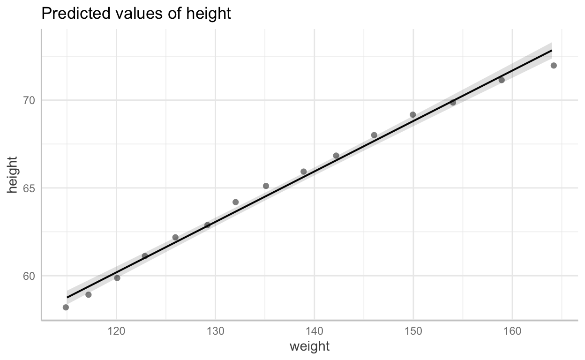

Students should confirm that theyve done this
+ New Folder command, create a folder called data (or similar) This is where youll store your data.figs (where youll stor your figures) 5 Create a folder called workbooks, or similar this is where youll store your weekly workbooks.If students did not create a data folder, then the here package task wont work.
knitr::opts_chunk$set(echo = TRUE)Students should confirm that theyve done this, e.g.:
4 + 5[1] 93 ^ 3[1] 27Show your work
Students should show their works*
JB: Students should confirm that theyve done this
iris dataset, find the flower with the longest Sepal.Length. (hint, use the max function.) Show the column details for this flower only.# answer:
max(iris$Sepal.Length)[1] 7.9iris dataset, find the flower with the shortest Sepal.Length. (hint, use the min function.)# answer:
min(iris$Sepal.Length)[1] 4.3# answers
max(iris$Sepal.Length) - min(iris$Sepal.Length)[1] 3.6# or
a <- max(iris$Sepal.Length)
b <- min(iris$Sepal.Length)c, :, dataframe# some quick fixes
df <- data.frame(
col1 = sample(1000, 100, replace = TRUE),
col2 = rnorm(n = 100, mean = 0, sd = 1),
col3 = 1:100,
col4 = rbinom(n = 100, size = 1, prob = .5),
col5 = rpois(n = 100, lambda = 10),
col6 = sample(c("a", "b", "c", "d"), 100, replace = TRUE),
col7 = rep(1:10, 10)
)# using base R
names(df)[] <-
c(
"sleepy",
"grumpy",
"happy",
"smelly",
"lovely",
"daggy",
"crazy"
)woman, write a linear model for height ~ weight# basic linear model
m1 <- lm ( height ~ weight, data = women)# coefficient plot
sjPlot::plot_model(m1)# table
sjPlot::tab_model(m1)| height | |||
|---|---|---|---|
| Predictors | Estimates | CI | p |
| (Intercept) | 25.72 | 23.4727.98 | <0.001 |
| weight | 0.29 | 0.270.30 | <0.001 |
| Observations | 15 | ||
| R2 / R2 adjusted | 0.991 / 0.990 | ||
ggeffects, create a prediction plot for this model.plot(
ggeffects::ggpredict( m1 , effects = "height"),
add.data = TRUE
)$weight
# this is a proportion (i.e. the number of instances / the total number of cases)
sum(women$weight > 140) / length(women$weight)[1] 0.4# This is onle approach
# Find the mean woman weight
mw <- mean( women$weight )
# calculae the proportion of women who are over that weight
sum(women$weight > mw) / length(women$weight)[1] 0.4666667# advantates: major pattern of data evident; clearly two clusters (at least); no tempatation to over interpret patters in the graph
# disadvantages, looks as if there is a cluster at zero; only two modes in the dataset are discernable
hist( iris$Petal.Length )# advantages: we can find more than one mode; distribution not clustered at zero
# disadvantages: with such a small sample, it is tempting to read too much into all the modes.
hist( iris$Petal.Length,
breaks = 100 )# here is one method.
mh <- mean (women$height)
sum(women$weight > mh) / length(women$height)
# should be `sum(women$height > mh)woman dataset so that weight comes before height. Then rename the columns w and h.# here is one method
# Bind columns as data frame
dfa <- cbind.data.frame(women$weight, women$height)
# change names
names(dfa)[] <- c("w", "h")# read data from file
library("readr")
testdata<- readr::read_csv(url("https://raw.githubusercontent.com/go-bayes/psych-447/main/data/testdata1.csv"))
str(testdata)spec_tbl_df [100 3] (S3: spec_tbl_df/tbl_df/tbl/data.frame)
$ id : num [1:100] 1 2 3 4 5 6 7 8 9 10 ...
$ weight: num [1:100] 80.5 87.8 95.7 74.6 68.3 ...
$ height: num [1:100] 153 182 188 142 137 ...
- attr(*, "spec")=
.. cols(
.. id = col_double(),
.. weight = col_double(),
.. height = col_double()
.. )Save data into your data folder using the following method
library("here")
# save data using here
saveRDS(testdata, here::here("data", "td.RDS"))Read data back into R
td <- readRDS(here::here("data", "td.RDS"))td dataset, write a linear model for height ~ weight as abovetd <- readRDS(here::here("data", "td.RDS"))
# note a clever student will change the object to something other than `m1` which we used above
m2<-lm(height ~ weight, data = td)
sjPlot::tab_model(m2)| height | |||
|---|---|---|---|
| Predictors | Estimates | CI | p |
| (Intercept) | 12.74 | 5.5119.98 | 0.001 |
| weight | 1.87 | 1.781.96 | <0.001 |
| Observations | 100 | ||
| R2 / R2 adjusted | 0.948 / 0.947 | ||
sjPlot::plot_model(m2)plot(
ggeffects::ggpredict( m2 , effects = "height" ),
add.data = TRUE
)$weightExtra credit, how would you interpret the intercept in this model?*
# a zero intercept makes no sense because biologically speaking weight can't be zero
library( ggplot2 )
summary( m2 )
Call:
lm(formula = height ~ weight, data = td)
Residuals:
Min 1Q Median 3Q Max
-25.4761 -6.2215 -0.1467 4.8392 23.9751
Coefficients:
Estimate Std. Error t value Pr(>|t|)
(Intercept) 12.74337 3.64557 3.496 0.000712 ***
weight 1.87029 0.04432 42.201 < 2e-16 ***
---
Signif. codes: 0 '***' 0.001 '**' 0.01 '*' 0.05 '.' 0.1 ' ' 1
Residual standard error: 9.683 on 98 degrees of freedom
Multiple R-squared: 0.9478, Adjusted R-squared: 0.9473
F-statistic: 1781 on 1 and 98 DF, p-value: < 2.2e-16```
If you see mistakes or want to suggest changes, please create an issue on the source repository.
Text and figures are licensed under Creative Commons Attribution CC BY-NC-SA 4.0. Source code is available at https://go-bayes.github.io/psych-447/, unless otherwise noted. The figures that have been reused from other sources don't fall under this license and can be recognized by a note in their caption: "Figure from ...".
For attribution, please cite this work as
Bulbulia (2021, March 17). Psych 447: Week 2 Workbook Solutions. Retrieved from https://vuw-psych-447.netlify.app/workbooks/W_2_s/
BibTeX citation
@misc{bulbulia2021week,
author = {Bulbulia, Joseph},
title = {Psych 447: Week 2 Workbook Solutions},
url = {https://vuw-psych-447.netlify.app/workbooks/W_2_s/},
year = {2021}
}